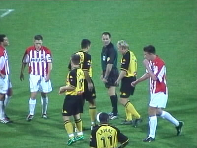

| Roda JC - PSV 0 - 1 (12 oktober 2001) |
Collectors card #1 shown by Twan, Westsider.
Roda-meëdsjer, Z16.
Er waren ongeveer 400 PSV-supporters.
Nog meer Roda-meëdsjer.
Dit was helaas buitenspel.
Hier legt John de Jong aan voor het schot dat uiteindelijk de
wedstrijd besliste.
Na een geweldige blunder van doelman Lodewijks scoort
Lawal bijna de gelijkmaker.

Deze kans gaat levert helaas niks op.
Een kijkje in de keuken van de scorebord-controller.
En alweer een Roda-meëdsje!

Het Rodapubliek was formidabel! De club werd volledig
ondersteund en met name in de tweede helft hield het
"Forza Roda" bijna 20 minuten aan, totdat.....
...een idioot een aansteker naar Lodewijks gooide die dank-
baar en theatraal ter aarde stortte om nog meer tijd te rekken.
Een van onze demonische lichtmasten. Symbolisch voor onze
onverzettelijkheid. Roda komt er boven op. Dit publiek, deze
ambiance, dit stadion........ FORZA RODA JC !!
©KPD